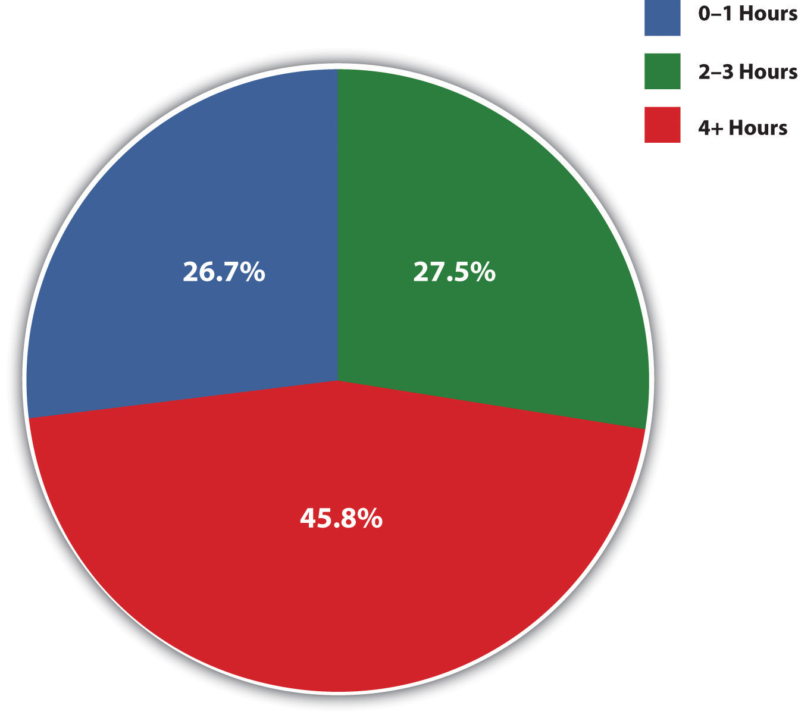
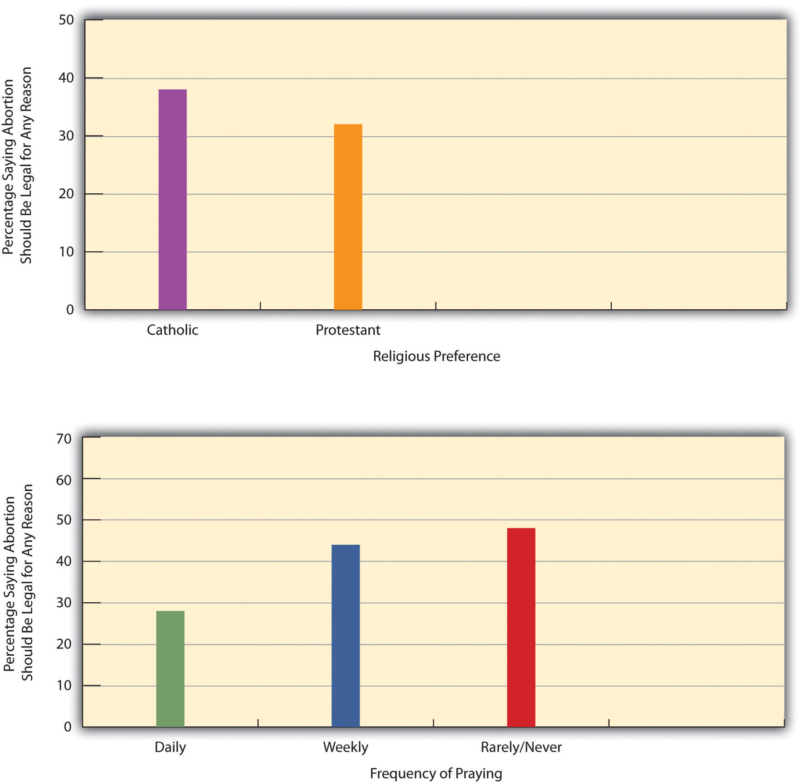

“Lessons from Charlie Howard’s Death,” the headline of the op-ed column said. On July 7, 2009, Bangor, Maine, marked the 25th anniversary of the death of Charlie Howard, an openly gay, 23-year-old man who was beaten and thrown off a bridge into a river by three teenagers on July 7, 1984. Howard could not swim and drowned. His three assailants eventually pleaded guilty to manslaughter and were sentenced to a juvenile correction center. One of the lessons of his death, wrote the columnist, a theology professor, is the need to challenge the hateful mindset that underlies homophobia. “The three youth who killed Charlie Howard were not social rebels acting out against societal norms and values,” he wrote, but instead “were social conformists who thought they would be rewarded for acting in conformity to this community’s norms. In fact, when the three boys returned to Bangor High School, they were cheered as heroes by their peers and some adults.” (Ellison, 2009)Ellison, M. M. (2009, July 7). Lessons from Charlie Howard’s death. Bangor Daily News. Retrieved from http://www.bangordailynews.com/detail/110121.html
Why did three teenagers in a small town beat a gay man and hurl him to his death a quarter-century ago? We may never know, but it seems obvious that they had learned to hate gays from community norms back then and perhaps also from some of the many people with whom they interacted every day. This was not the first hate crime against a gay man or other individual, nor was it the last, but it nonetheless illustrates one of the ugly aspects of the many things we learn from our culture and from the people around us. We learn many good things, all necessary to have a society, but we can also learn to accept some very harmful beliefs and to practice very harmful behaviors.
The stories of Sarah Patton Boyle and Lillian Smith illustrate this all too well. Sarah Patton Boyle was born in 1906 to one of the leading families of Virginia. A great-grandfather had been a prominent attorney and acting governor of the state; both her grandfathers led illustrious military careers; her father was a respected Episcopalian minister. She was raised on the plantation on which her ancestors had once owned slaves, and her family employed several African American servants.
It was in this setting that little Sarah learned to be racially prejudiced. She was forbidden to visit the servants’ rooms, which, she was told, were filthy and ridden with disease. The servants themselves were not allowed to use the family’s bathroom or china, lest they spread disease from the germs they were assumed to harbor. Sarah’s mother loved her servants the same way she loved the family’s pets, “without the slightest feeling that they were much like herself,” and taught Sarah that African Americans “belonged to a lower order of man than we” (Boyle, 1962, p. 14).Boyle, S. P. (1962). The desegregated heart: A Virginian’s stand in time of transition. New York, NY: William Morrow. When Sarah turned 12, she was told to stop playing with the servants’ children because she was now too old to be “familiar” with black youngsters, and she then endured a “dreadful training period” in which she was scolded if she forgot her new, standoffish role. She was socialized during the next few years to treat whites better than blacks. When Sarah’s adolescence ended, she was “as close to a typical Southern lady as anyone ever is to a typical anything” (Boyle, 1962, pp. 14, 29).Boyle, S. P. (1962). The desegregated heart: A Virginian’s stand in time of transition. New York, NY: William Morrow. Her racial views stayed with her for many years.
Whites like Sarah Patton Boyle and Lillian Smith, who grew up in the South before the 1960s civil rights movement, learned to be racially prejudiced toward African Americans.
Source: Photo courtesy of U.S. Library of Congress, http://loc.gov/pictures/resource/fsa.8c10944.
Lillian Smith learned similar beliefs after her birth, a few years before Sarah’s, to a wealthy family in Florida. She learned about taboos and manners in race relations just as she learned her games, prayers, and other childhood practices. A central lesson was that “I was better than a Negro, that all black folks have their place and must be kept in it…that a terrifying disaster would befall the South if ever I treated a Negro as my social equal” (Smith, 1949, p. 17).Smith, L. (1949). Killers of the dream. New York, NY: W. W. Norton. Her parents played a prime role in this learning process: “The mother who taught me what I know of tenderness and love and compassion taught me also the bleak rituals of keeping Negroes in their place. The father who…reminding me that ‘all men are brothers,’ trained me in the steel-rigid decorums I must demand of every colored male. They…taught me also to split my conscience from my acts and Christianity from Southern tradition” (Smith, 1949, pp. 17–18).Smith, L. (1949). Killers of the dream. New York, NY: W. W. Norton. These racial views also stayed with her for many years.
Thanks to the civil rights movement, the South is much different, of course, from when Sarah Patton Boyle and Lillian Smith were growing up, but their poignant descriptions and Charlie Howard’s death remind us that children and adolescents learn all sorts of things, good or bad, without formal instruction. They learn these things from their parents, their friends, and other parts of their social environment. The things they learn constitute their culture: norms, values, and symbols. SocializationThe process whereby individuals learn the culture of their society. is the term sociologists use to describe the process by which people learn their culture. Socialization occurs in societies big and small, simple and complex, preindustrial and industrial. It happens in the United States, in Brazil, in Saudi Arabia, and in Indonesia. Without socialization we would not learn our culture, and, as Chapter 3 "Culture" indicated, without culture we could not have a society. Socialization, then, is an essential process for any society to be possible.
This chapter examines several aspects of socialization. In so doing, it continues developing the sociological perspective addressed by the previous chapters, as we will again see the ways in which our social environment shapes our thoughts, actions, and life chances.
We have just noted that socialization is how culture is learned, but socialization is also important for another important reason. To illustrate this importance, let’s pretend we find a 6-year-old child who has had almost no human contact since birth. After the child was born, her mother changed her diapers and fed her a minimal diet but otherwise did not interact with her. The child was left alone all day and night for years and never went outside. We now find her at the age of 6. How will her behavior and actions differ from those of the average 6-year-old? Take a moment and write down all the differences you would find.
In no particular order, here is the list you probably wrote. First, the child would not be able to speak; at most, she could utter a few grunts and other sounds. Second, the child would be afraid of us and probably cower in a corner. Third, the child would not know how to play games and interact with us. If we gave her some food and utensils, she would eat with her hands and not know how to use the utensils. Fourth, the child would be unable to express a full range of emotions. For example, she might be able to cry but would not know how to laugh. Fifth, the child would be unfamiliar with, and probably afraid of, our culture’s material objects, including cell phones and televisions. In these and many other respects, this child would differ dramatically from the average 6-year-old youngster in the United States. She would look human, but she would not act human. In fact, in many ways she would act more like a frightened animal than like a young human being, and she would be less able than a typical dog to follow orders and obey commands.
As this example indicates, socialization makes it possible for us to fully function as human beings. Without socialization, we could not have our society and culture. And without social interaction, we could not have socialization. Our example of a socially isolated child was hypothetical, but real-life examples of such children, often called feralA term used for children who have been extremely socially isolated. children, have unfortunately occurred and provide poignant proof of the importance of social interaction for socialization and of socialization for our ability to function as humans.
One of the most famous feral children was Victor of Aveyron, who was found wandering in the woods in southern France in 1797. He then escaped custody but emerged from the woods in 1800. Victor was thought to be about age 12 and to have been abandoned some years earlier by his parents; he was unable to speak and acted much more like a wild animal than a human child. Victor first lived in an institution and then in a private home. He never learned to speak, and his cognitive and social development eventually was no better than a toddler’s when he finally died at about age 40 (Lane, 1976).Lane, H. L. (1976). The wild boy of Aveyron. Cambridge, MA: Harvard University Press.
In rare cases, children have grown up in extreme isolation and end up lacking several qualities that make them fully human. This is a photo of Victor of Aveyron, who emerged from the woods in southern France in 1800 after apparently being abandoned by his parents some years earlier. He could not speak, and his cognitive and social skills never advanced beyond those of a small child before he died at the age of 40.
Another such child, found more than about a half-century ago, was called Anna, who “had been deprived of normal contact and had received a minimum of human care for almost the whole of her first six years of life” (Davis, 1940, p. 554).Davis, K. (1940). Extreme social isolation of a child. American Journal of Sociology, 45, 554–565. After being shuttled from one residence to another for her first 5 months, Anna ended up living with her mother in her grandfather’s house and was kept in a small, airless room on the second floor because the grandfather was so dismayed by her birth out of wedlock that he hated seeing her. Because her mother worked all day and would go out at night, Anna was alone almost all the time and lived in filth, often barely alive. Her only food in all those years was milk.
When Anna was found at the age of 6, she could not talk or walk or “do anything that showed intelligence” (Davis, 1940, p. 554).Davis, K. (1940). Extreme social isolation of a child. American Journal of Sociology, 45, 554–565. She was also extremely undernourished and emaciated. Two years later, she had learned to walk, understand simple commands, feed herself, and remember faces, but she could not talk and in these respects resembled a 1-year-old infant more than the 7-year-old child she really was. By the time she died of jaundice at about age 9, she had acquired the speech of a 2-year-old.
Shortly after Anna was discovered, another girl, called Isabelle, was found in similar circumstances at age 6. She was also born out of wedlock and lived alone with her mother in a dark room isolated from the rest of the mother’s family. Because her mother was mute, Isabelle did not learn to speak, although she did communicate with her mother via some simple gestures. When she was finally found, she acted like a wild animal around strangers, and in other respects she behaved more like a child of 6 months than one of more than 6 years. When first shown a ball, she stared at it, held it in her hand, and then rubbed an adult’s face with it. Intense training afterward helped Isabelle recover, and 2 years later she had reached a normal speaking level for a child her age (Davis, 1940).Davis, K. (1940). Extreme social isolation of a child. American Journal of Sociology, 45, 554–565.
These cases of feral children show that extreme isolation—or, to put it another way, lack of socialization—deprives children of the obvious and not-so-obvious qualities that make them human and in other respects retards their social, cognitive, and emotional development. A series of famous experiments by psychologists Harry and Margaret Harlow (1962)Harlow, H. F., & Harlow, M. K. (1962). Social deprivation in monkeys. Scientific American, 207, 137–146. reinforced the latter point by showing it to be true of monkeys as well. The Harlows studied rhesus monkeys that had been removed from their mothers at birth; some were raised in complete isolation, while others were given fake mothers made of cloth and wire with which to cuddle. Neither group developed normally, although the monkeys cuddling with the fake mothers fared somewhat better than those that were totally isolated. In general, the monkeys were not able to interact later with other monkeys, and female infants abused their young when they became mothers. The longer their isolation, the more the monkeys’ development suffered. By showing the dire effects of social isolation, the Harlows’ experiment reinforced the significance of social interaction for normal development. Combined with the tragic examples of feral children, their experiments remind us of the critical importance of socialization and social interaction for human society.
Because socialization is so important, scholars in various fields have tried to understand how and why it occurs, with different scholars looking at different aspects of the process. Their efforts mostly focus on infancy, childhood, and adolescence, which are the critical years for socialization, but some have also looked at how socialization continues through the life course. Let’s examine some of the major theories of socialization, which are summarized in Table 4.1 "Theory Snapshot".
Table 4.1 Theory Snapshot
| Theory | Major figure(s) | Major assumptions |
|---|---|---|
| Looking-glass self | Charles Horton Cooley | Children gain an impression of how people perceive them as the children interact with them. In effect, children “see” themselves when they interact with other people, as if they are looking in a mirror. Individuals use the perceptions that others have of them to develop judgments and feelings about themselves. |
| Taking the role of the other | George Herbert Mead | Children pretend to be other people in their play and in so doing learn what these other people expect of them. Younger children take the role of significant others, or the people, most typically parents and siblings, who have the most contact with them; older children when they play sports and other games take on the roles of other people and internalize the expectations of the generalized other, or society itself. |
| Psychoanalytic | Sigmund Freud | The personality consists of the id, ego, and superego. If a child does not develop normally and the superego does not become strong enough to overcome the id, antisocial behavior may result. |
| Cognitive development | Jean Piaget | Cognitive development occurs through four stages. The final stage is the formal operational stage, which begins at age 12 as children begin to use general principles to resolve various problems. |
| Moral development | Lawrence Kohlberg, Carol Gilligan | Children develop their ability to think and act morally through several stages. If they fail to reach the conventional stage, in which adolescents realize that their parents and society have rules that should be followed because they are morally right to follow, they might well engage in harmful behavior. Whereas boys tend to use formal rules to decide what is right or wrong, girls tend to take personal relationships into account. |
| Identity development | Erik Erikson | Identity development encompasses eight stages across the life course. The fifth stage occurs in adolescence and is especially critical because teenagers often experience an identity crisis as they move from childhood to adulthood. |
One set of explanations, and the most sociological of those we discuss, looks at how the selfSelf-image, self-identity, or self-concept., or one’s identity, self-concept, and self-image, develops. These explanations stress that we learn how to interact by first interacting with others and that we do so by using this interaction to gain an idea of who we are and what they expect of us.
Among the first to advance this view was Charles Horton Cooley (1864–1929), who said that by interacting with other people we gain an impression of how they perceive us. In effect, we “see” ourselves when we interact with other people, as if we are looking in a mirror when we are with them. Cooley (1902)Cooley, C. H. (1902). Social organization. New York, NY: Scribner’s. developed his famous concept of the looking-glass selfCharles Horton Cooley’s term for one aspect of the process whereby we gain an understanding of our self-image and self-identity. to summarize this process. Cooley said we first imagine how we appear to others and then imagine how they think of us and, more specifically, whether they are evaluating us positively or negatively. We then use these perceptions to develop judgments and feelings about ourselves, such as pride or embarrassment.
Sometimes errors occur in this complex process, as we may misperceive how others regard us and develop misguided judgments of our behavior and feelings. For example, you may have been in a situation where someone laughed at what you said, and you thought they were mocking you, when in fact they just thought you were being funny. Although you should have interpreted their laughter positively, you interpreted it negatively and probably felt stupid or embarrassed.
Whether errors occur or not, the process Cooley described is especially critical during childhood and adolescence, when our self is still in a state of flux. Imagine how much better children on a sports team feel after being cheered for making a great play or how children in the school band feel after a standing ovation at the end of the band’s performance. If they feel better about themselves, they may do that much better next time. For better or worse, the reverse is also true. If children do poorly on the sports field or in a school performance and the applause they hoped for does not occur, they may feel dejected and worse about themselves and from frustration or anxiety perform worse the next time around.
Yet it is also true that the looking-glass-self process affects us throughout our lives. By the time we get out of late adolescence and into our early adult years, we have very much developed our conception of our self, yet this development is never complete. As young, middle-aged, or older adults, we continue to react to our perceptions of how others view us, and these perceptions influence our conception of our self, even if this influence is often less than was true in our younger years. Whether our social interaction is with friends, relatives, coworkers, supervisors, or even strangers, our self continues to change.
Another scholar who discussed the development of the self was George Herbert Mead (1863–1931), a founder of the field of symbolic interactionism discussed in Chapter 1 "Sociology and the Sociological Perspective". Mead’s (1934)Mead, G. H. (1934). Mind, self, and society. Chicago, IL: University of Chicago Press. main emphasis was on children’s playing, which he saw as central to their understanding of how people should interact. When they play, Mead said, children take the role of the otherGeorge Herbert Mead’s term for what children do when they play that helps them acquire an understanding of their self.. This means they pretend to be other people in their play and in so doing learn what these other people expect of them. For example, when children play house and pretend to be their parents, they treat their dolls the way they think their parents treat them. In so doing, they get a better idea of how they are expected to behave. Another way of saying this is that they internalize the expectations other people have of them.
Younger children, said Mead, take the role of significant othersGeorge Herbert Mead’s term for parents and other important individuals in the lives of children., or the people, most typically parents and siblings, who have the most contact with them. Older children take on the roles of other people and learn society’s expectations as a whole. In so doing, they internalize the expectations of what Mead called the generalized otherGeorge Herbert Mead’s term for society’s conscience., or society itself.
This whole process, Mead wrote, involves several stages. In the imitation stage, infants can only imitate behavior without really understanding its purposes. If their parents rub their own bellies and laugh, 1-year-olds may do likewise. After they reach the age of 3, they are in the play stage. Here most of their play is by themselves or with only one or two other children, and much of it involves pretending to be other people: their parents, teachers, superheroes, television characters, and so forth. In this stage they begin taking the role of the other. Once they reach age 6 or 7, or roughly the time school begins, the games stage begins, and children start playing in team sports and games. The many players in these games perform many kinds of roles, and they must all learn to anticipate the actions of other members of their team. In so doing, they learn what is expected of the roles all team members are supposed to play and by extension begin to understand the roles society wants us to play, or to use Mead’s term, the expectations of the generalized other.
Mead felt that the self has two parts, the I and the me. The I is the creative, spontaneous part of the self, while the me is the more passive part of the self stemming from the internalized expectations of the larger society. These two parts are not at odds, he thought, but instead complement each other and thus enhance the individual’s contributions to society. Society needs creativity, but it also needs at least some minimum of conformity. The development of both these parts of the self is important not only for the individual but also for the society to which the individual belongs.
A second set of explanations is more psychological, as it focuses on the development of personality, cognitive ability, and morality.
Whereas Cooley and Mead focused on interaction with others in explaining the development of the self, the great psychoanalyst Sigmund Freud (1856–1939) focused on unconscious, biological forces that he felt shape individual personality. Freud (1933)Freud, S. (1933). New introductory lectures on psycho-analysis. New York, NY: Norton. thought that the personality consists of three parts: the idSigmund Freud’s term for the instinctual, selfish part of the personality., egoSigmund Freud’s term for the rational part of the personality., and superegoSigmund Freud’s term for society’s conscience.. The id is the selfish part of the personality and consists of biological instincts that all babies have, including the need for food and, more generally, the demand for immediate gratification. As babies get older, they learn that not all their needs can be immediately satisfied and thus develop the ego, or the rational part of the personality. As children get older still, they internalize society’s norms and values and thus begin to develop their superego, which represents society’s conscience. If a child does not develop normally and the superego does not become strong enough, the individual is more at risk for being driven by the id to commit antisocial behavior.
Sigmund Freud believed that the personality consists of three parts: the id, ego, and superego. The development of these biological forces helps shape an individual’s personality.
Source: Photo courtesy of LIFE Photo Archive, http://images.google.com/hosted/life/l?imgurl=e45a47b1b422cca3.
Freud’s basic view that an individual’s personality and behavior develop largely from within differs from sociology’s emphasis on the social environment. That is not to say his view is wrong, but it is to say that it neglects the many very important influences highlighted by sociologists.
Children acquire a self and a personality but they also learn how to think and reason. How they acquire such cognitive development was the focus of research by Swiss psychologist Jean Piaget (1896–1980). Piaget (1954)Piaget, J. (1954). The construction of reality in the child. New York, NY: Basic Books. thought that cognitive development occurs through four stages and that proper maturation of the brain and socialization were necessary for adequate development.
The first stage is the sensorimotor stage, in which infants cannot really think or reason and instead use their hearing, vision, and other senses to discover the world around them. The second stage is the preoperational stage, lasting from about age 2 to age 7, in which children begin to use symbols, especially words, to understand objects and simple ideas. The third stage is the concrete operational stage, lasting from about age 7 to age 11 or 12, in which children begin to think in terms of cause and effect but still do not understand underlying principles of fairness, justice, and related concepts. The fourth and final stage is the formal operational stage, which begins about the age of 12. Here children begin to think abstractly and use general principles to resolve various problems.
Recent research supports Piaget’s emphasis on the importance of the early years for children’s cognitive development. Scientists have found that brain activity develops rapidly in the earliest years of life. Stimulation from a child’s social environment enhances this development, while a lack of stimulation impairs it. Children whose parents or other caregivers routinely play with them and talk, sing, and read to them have much better neurological and cognitive development than other children (Riley, San Juan, Klinkner, & Ramminger, 2009).Riley, D., San Juan, R. R., Klinkner, J., & Ramminger, A. (2009). Intellectual development: Connecting science and practice in early childhood settings. St. Paul, MN: Redleaf Press. By providing a biological basis for the importance of human stimulation for children, this research underscores both the significance of interaction and the dangers of social isolation. For both biological and social reasons, socialization is not fully possible without extensive social interaction.
An important part of children’s reasoning is their ability to distinguish right from wrong and to decide on what is morally correct to do. Psychologist Lawrence Kohlberg (1927–1987) said that children develop their ability to think and act morally through several stages. In the preconventional stage, young children equate what is morally right simply to what keeps them from getting punished. In the conventional stage, adolescents realize that their parents and society have rules that should be followed because they are morally right to follow, not just because disobeying them leads to punishment. At the postconventional stage, which occurs in late adolescence and early adulthood, individuals realize that higher moral standards may supersede those of their own society and even decide to disobey the law in the name of these higher standards. If people fail to reach at least the conventional stage, Kohlberg (1969)Kohlberg, L. (1969). States in the development of moral thought and action. New York, NY: Holt, Rinehart and Winston. said, they do not develop a conscience and instead might well engage in harmful behavior if they think they will not be punished. Incomplete moral development, Kohlberg concluded, was a prime cause of antisocial behavior.
One limitation of Kohlberg’s research was that he studied only boys. Do girls go through similar stages of moral development? Carol Gilligan (1982)Gilligan, C. (1982). In a different voice: Psychological theory and women’s development. Cambridge, MA: Harvard University Press. concluded that they do not. Whereas boys tend to use formal rules to decide what is right or wrong, she wrote, girls tend to take personal relationships into account. If people break a rule because of some important personal need or because they are trying to help someone, then their behavior may not be wrong. Put another way, males tend to use impersonal, universalistic criteria for moral decision making, whereas females tend to use more individual, particularistic criteria.
An example from children’s play illustrates the difference between these two forms of moral reasoning. If boys are playing a sport, say basketball, and a player says he was fouled, they may disagree—sometimes heatedly—over how much contact occurred and whether it indeed was enough to be a foul. In contrast, girls in a similar situation may decide in the interest of having everyone get along to call the play a “do-over.”
We noted earlier that the development of the self is not limited to childhood but instead continues throughout the life span. More generally, although socialization is most important during childhood and adolescence, it, too, continues throughout the life span. Psychologist Erik Erikson (1902–1990) explicitly recognized this central fact in his theory of identity development (Erikson, 1980).Erikson, E. H. (1980). Identity and the life cycle. New York, NY: Norton. This sort of development, he said, encompasses eight stages of life across the life course. In the first four stages, occurring in succession from birth to age 12, children ideally learn trust, self-control, and independence and also learn how to do tasks whose complexity increases with their age. If all this development goes well, they develop a positive identity, or self-image.
The fifth stage occurs in adolescence and is especially critical, said Erikson, because teenagers often experience an identity crisis. This crisis occurs because adolescence is a transition between childhood and adulthood: adolescents are leaving childhood but have not yet achieved adulthood. As they try to work through all the complexities of adolescence, teenagers may become rebellious at times, but most eventually enter young adulthood with their identities mostly settled. Stages 6, 7, and 8 involve young adulthood, middle adulthood, and late adulthood, respectively. In each of these stages, people’s identity development is directly related to their family and work roles. In late adulthood, people reflect on their lives while trying to remain contributing members of society. Stage 8 can be a particularly troubling stage for many people, as they realize their lives are almost over.
Erikson’s research helped stimulate the further study of socialization past adolescence, and today the study of socialization during the years of adulthood is burgeoning. We return to adulthood in Chapter 4 "Socialization", Section 4.4 "Socialization Through the Life Course" and address it again in the discussion of age and aging in Chapter 12 "Aging and the Elderly".
Several institutional and other sources of socialization exist and are called agents of socialization. The first of these, the family, is certainly the most important agent of socialization for infants and young children.
Should parents get the credit when their children turn out to be good kids and even go on to accomplish great things in life? Should they get the blame if their children turn out to be bad? No parent deserves all the credit or blame for their children’s successes and failures in life, but the evidence indicates that our parents do affect us profoundly. In many ways, we even end up resembling our parents in more than just appearance.
Understanding Racial Socialization
In a society that is still racially prejudiced, African American parents continue to find it necessary to teach their children about African American culture and to prepare them for the bias and discrimination they can expect to encounter. Scholars in sociology and other disciplines have studied this process of racial socialization. One of their most interesting findings is that African American parents differ in the degree of racial socialization they practice: some parents emphasize African American identity and racial prejudice to a considerable degree, while other parents mention these topics to their children only minimally. The reasons for these differences have remained unclear.
Sociologist Jason E. Shelton (2008)Shelton, J. E. (2008). The investment in blackness hypothesis: Toward greater understanding of who teaches what during racial socialization. Du Bois Review: Social Science Research on Race, 5(2), 235–257. analyzed data from a national random sample of African Americans to determine these reasons, in what he called “one of the most comprehensive analyses to date of racial socialization strategies among African Americans” (p. 237). Among other questions, respondents were asked whether “in raising your children, have you done or told them things to help them know what it means to be Black.” They were also asked whether “there are any other things you’ve done or told your children to help them know how to get along with White people.”
In his major results, Shelton found that respondents were more likely to practice racial socialization if they were older, female, and living outside the South; if they perceived that racial discrimination was a growing problem and were members of civil rights or other organization aimed at helping African Americans; and if they had higher incomes.
These results led Shelton to conclude that “African Americans are not a culturally monolithic group,” as they differ in “the parental lessons they impart to their children about race relations” (2008, p. 253).Shelton, J. E. (2008). The investment in blackness hypothesis: Toward greater understanding of who teaches what during racial socialization. Du Bois Review: Social Science Research on Race, 5(2), 235–257. Further, the parents who do practice racial socialization “do so in order to demystify and empower their offspring to seize opportunities in the larger society” (p. 253).
Shelton’s study helps us to understand the factors accounting for differences in racial socialization by African American parents, and it also helps us understand that the parents who do attempt to make their children aware of U.S. race relations are merely trying, as most parents do, to help their children get ahead in life. By increasing our understanding of these matters, Shelton’s research has helped make a difference.
The reason we turn out much like our parents, for better or worse, is that our families are such an important part of our socialization process. When we are born, our primary caregivers are almost always one or both of our parents. For several years we have more contact with them than with any other adults. Because this contact occurs in our most formative years, our parents’ interaction with us and the messages they teach us can have a profound impact throughout our lives, as indicated by the stories of Sarah Patton Boyle and Lillian Smith presented earlier.
The ways in which our parents socialize us depend on many factors, two of the most important of which are our parents’ social class and our own biological sex. Melvin Kohn (1965, 1977)Kohn, M. (1965). Social class and parent-child relationships: An interpretation. American Journal of Sociology, 68, 471–480; Kohn, M. (1977). Class and conformity. Homewood, IL: Dorsey. found that working-class and middle-class parents tend to socialize their children very differently. Kohn reasoned that working-class parents tend to hold factory and other jobs in which they have little autonomy and instead are told what to do and how to do it. In such jobs, obedience is an important value, lest the workers be punished for not doing their jobs correctly. Working-class parents, Kohn thought, should thus emphasize obedience and respect for authority as they raise their children, and they should favor spanking as a primary way of disciplining their kids when they disobey. In contrast, middle-class parents tend to hold white-collar jobs where autonomy and independent judgment are valued and workers get ahead by being creative. These parents should emphasize independence as they raise their children and should be less likely than working-class parents to spank their kids when they disobey.
If parents’ social class influences how they raise their children, it is also true that the sex of their children affects how they are socialized by their parents. Many studies find that parents raise their daughters and sons quite differently as they interact with them from birth. We will explore this further in Chapter 11 "Gender and Gender Inequality", but suffice it to say here that parents help their girls learn how to act and think “like girls,” and they help their boys learn how to act and think “like boys.” That is, they help their daughters and sons learn their gender (Wood, 2009).Wood, J. T. (2009). Gendered lives: Communication, gender, and culture. Belmont, CA: Wadsworth. For example, they are gentler with their daughters and rougher with their sons. They give their girls dolls to play with, and their boys guns. Girls may be made of “sugar and spice and everything nice” and boys something quite different, but their parents help them greatly, for better or worse, turn out that way. To the extent this is true, our gender stems much more from socialization than from biological differences between the sexes, or so most sociologists probably assume. To return to a question posed earlier, if Gilligan is right that boys and girls reach moral judgments differently, socialization matters more than biology for how they reach these judgments.
As the “Learning From Other Societies” box illustrates, various cultures socialize their children differently. We can also examine cross-cultural variation in socialization with data from the World Values Survey, which was administered to almost six dozen nations. Figure 4.1 "Percentage Believing That Obedience Is Especially Important for a Child to Learn" shows the percentage of people in several countries who think it is “especially important for children to learn obedience at home.” Here we see some striking differences in the value placed on obedience, with the United States falling somewhat in between the nations in the figure.
Children and Socialization in Japan
This chapter ends with the observation that American children need to be socialized with certain values in order for our society to be able to address many of the social issues, including hate crimes and violence against women, facing it. As we consider the socialization of American children, the experience of Japan offers a valuable lesson.
Recall from Chapter 2 "Eye on Society: Doing Sociological Research" that Japan’s culture emphasizes harmony, cooperation, and respect for authority. Socialization in Japan is highly oriented toward the teaching of the values just listed, with much of it stressing the importance of belonging to a group and dependence, instead of individual autonomy and independence. This is especially true in Japanese schools, which, as two sociologists write, “stress the similarity of all children, and the importance of the group” (Schneider & Silverman, 2010, p. 24).Schneider, L., & Silverman, A. (2010). Global sociology: Introducing five contemporary societies (5th ed.). New York, NY: McGraw-Hill. Let’s see how this happens (Hendry, 1987; Schwalb & Schwalb, 1996).Hendry, J. (1987). Understanding Japanese society. London, England: Croom Helm; Schwalb, D. W., & Schwalb, B. J. (Eds.). (1996). Japanese childrearing: Two generations of scholarship. New York, NY: Guilford Press.
From the time they begin school, Japanese children learn to value their membership in their homeroom, or kumi, and they spend several years in the same kumi. Each kumi treats its classroom as a “home away from home,” as the children arrange the classroom furniture, bring in plants and other things from their own homes, and clean the classroom every day. At recess one kumi will play against another. In an interesting difference from standard practice in the United States, a kumi in junior high school will stay in its classroom while the teachers for, say, math and social science move from one classroom to another. In the United States, of course, the opposite is true: teachers stay in their classrooms, and students move from one room to another.
Other practices in Japanese schools further the learning of Japanese values. Young schoolchildren wear the same uniforms. Japanese teachers use constant drills to teach them how to bow, and they have the children repeatedly stand up and sit down as a group. These practices help students learn respect for authority and help enhance the sense of group belonging that the kumi represents. Whereas teachers in the United States routinely call on individual students to answer a question, Japanese teachers rarely do this. Rather than competing with each other for a good grade, Japanese schoolchildren are evaluated according to the performance of the kumi as a whole. Because decision making within the kumi is done by consensus, the children learn the need to compromise and to respect each other’s feelings.
Because the members of a kumi spend so much time together for so many years, they develop extremely close friendships and think of themselves more as members of the kumi than as individuals. They become very loyal to the kumi and put its interests above their own individual interests. In these and other ways, socialization in Japanese schools helps the children and adolescents there learn the Japanese values of harmony, group loyalty, and respect for authority. If American children learned these values to a greater degree, it would be easier to address violence and other issues facing the United States.
Figure 4.1 Percentage Believing That Obedience Is Especially Important for a Child to Learn

Source: Data from World Values Survey, 2002.
Schools socialize children in several ways. First, students learn a formal curriculum, informally called the “three Rs”: reading, writing, and arithmetic. This phase of their socialization is necessary for them to become productive members of their society. Second, because students interact every day at school with their peers, they ideally strengthen their social interaction skills. Third, they interact with authority figures, their teachers, who are not their parents. For children who have not had any preschooling, their teachers are often the first authority figures they have had other than their parents. The learning they gain in relating to these authority figures is yet another important component of their socialization.
Functional theorists cite all these aspects of school socialization, but conflict theorists instead emphasize that schools in the United States also impart a hidden curriculumThe beliefs and values that children learn in school. by socializing children to accept the cultural values of the society in which the schools are found. To be more specific, children learn primarily positive things about the country’s past and present; they learn the importance of being neat, patient, and obedient; and they learn to compete for good grades and other rewards. In this manner, they learn to love America and not to recognize its faults, and they learn traits that prepare them for jobs and careers that will bolster the capitalist economy. Children are also socialized to believe that failure, such as earning poor grades, stems from not studying hard enough and, more generally, from not trying hard enough (Booher-Jennings, 2008; Bowles & Gintis, 1976).Booher-Jennings, J. (2008). Learning to label: Socialisation, gender, and the hidden curriculum of high-stakes testing. British Journal of Sociology of Education, 29, 149–160; Bowles, S., & Gintis, H. (1976). Schooling in capitalist America: Educational reforms and the contradictions of economic life. New York, NY: Basic Books. This process reinforces the blaming-the-victim ideology discussed in Chapter 1 "Sociology and the Sociological Perspective". Schools are also a significant source of gender socialization, as even in this modern day, teachers and curricula send out various messages that reinforce the qualities traditionally ascribed to females and males, and students engage in recess and other extracurricular activities that do the same thing (Booher-Jennings, 2008; Thorne, 1993).Booher-Jennings, J. (2008). Learning to label: Socialisation, gender, and the hidden curriculum of high-stakes testing. British Journal of Sociology of Education, 29, 149–160; Thorne, B. (1993). Gender play: Girls and boys in school. New Brunswick, NJ: Rutgers University Press.
When you were a 16-year-old, how many times did you complain to your parent(s), “All of my friends are [doing so and so]. Why can’t I? It isn’t fair!” As this all-too-common example indicates, our friends play a very important role in our lives. This is especially true during adolescence, when peers influence our tastes in music, clothes, and so many other aspects of our lives, as the now-common image of the teenager always on a cell phone reminds us. But friends are important during other parts of the life course as well. We rely on them for fun, for emotional comfort and support, and for companionship. That is the upside of friendships.
The downside of friendships is called peer pressure, with which you are undoubtedly familiar. Suppose it is Friday night, and you are studying for a big exam on Monday. Your friends come by and ask you to go with them to get a pizza and a drink. You would probably agree to go with them, partly because you really dislike studying on a Friday night, but also because there is at least some subtle pressure on you to do so. As this example indicates, our friends can influence us in many ways. During adolescence, their interests can affect our own interests in film, music, and other aspects of popular culture. More ominously, adolescent peer influences have been implicated in underage drinking, drug use, delinquency, and hate crimes, such as the killing of Charlie Howard, recounted at the beginning of this chapter (Agnew, 2007)Agnew, R. (2007). Pressured into crime: An overview of general strain theory. New York, NY: Oxford University Press. (see Chapter 5 "Social Structure and Social Interaction").
After we reach our 20s and 30s, our peers become less important in our lives, especially if we get married. Yet even then our peers do not lose all their importance, as married couples with young children still manage to get out with friends now and then. Scholars have also begun to emphasize the importance of friendships with coworkers for emotional and practical support and for our continuing socialization (Elsesser & Peplau, 2006; Marks, 1994).Elsesser, K., & Peplau, L. A. (2006). The glass partition: Obstacles to cross-sex friendships at work. Human Relations, 59, 1077–1100; Marks, S. R. (1994). Intimacy in the public realm: The case of co-workers. Social Forces, 72, 843–858.
The mass media are another agent of socialization. Television shows, movies, popular music, magazines, Web sites, and other aspects of the mass media influence our political views; our tastes in popular culture; our views of women, people of color, and gays; and many other beliefs and practices.
In an ongoing controversy, the mass media are often blamed for youth violence and many other of our society’s ills. The average child sees thousands of acts of violence on television and in the movies before reaching young adulthood. Rap lyrics often seemingly extol very ugly violence, including violence against women. Commercials can greatly influence our choice of soda, shoes, and countless other products. The mass media also reinforce racial and gender stereotypes, including the belief that women are sex objects and suitable targets of male violence. In the General Social Survey (GSS), about 28% of respondents said that they watch four or more hours of television every day, while another 46% watch two to three hours daily (see Figure 4.2 "Average Number of Hours of Television Watched Daily"). The mass media certainly are an important source of socialization unimaginable a half-century ago.
Figure 4.2 Average Number of Hours of Television Watched Daily
Source: Data from General Social Survey, 2008.
As the mass media socialize children, adolescents, and even adults, a key question is the extent to which media violence causes violence in our society (Surette, 2011).Surette, R. (2011). Media, crime, and criminal justice: Images, realities, and policies (4th ed.). Belmont, CA: Wadsworth. Studies consistently uncover a strong correlation between watching violent television shows and movies and committing violence. However, this does not necessarily mean that watching the violence actually causes violent behavior: perhaps people watch violence because they are already interested in it and perhaps even committing it. Scholars continue to debate the effect of media violence on youth violence. In a free society, this question is especially important, as the belief in this effect has prompted calls for monitoring the media and the banning of certain acts of violence. Civil libertarians argue that such calls smack of censorship that violates the First Amendment to the Constitution, whole others argue that they fall within the First Amendment and would make for a safer society. Certainly the concern and debate over mass media violence will continue for years to come.
One final agent of socialization is religion, discussed further in Chapter 12 "Aging and the Elderly". Although religion is arguably less important in people’s lives now than it was a few generations ago, it still continues to exert considerable influence on our beliefs, values, and behaviors.
Here we should distinguish between religious preference (e.g., Protestant, Catholic, or Jewish) and religiosity (e.g., how often people pray or attend religious services). Both these aspects of religion can affect your values and beliefs on religious and nonreligious issues alike, but their particular effects vary from issue to issue. To illustrate this, consider the emotionally charged issue of abortion. People hold very strong views on abortion, and many of their views stem from their religious beliefs. Yet which aspect of religion matters the most, religious preference or religiosity? General Social Survey data help us answer this question (Figure 4.3 "Religious Preference, Religiosity, and Belief That Abortion Should Be Legal for Any Reason"). It turns out that religious preference, if we limit it for the sake of this discussion to Catholics versus Protestants, does not matter at all: Catholics and Protestants in the GSS exhibit roughly equal beliefs on the abortion issue, as about one-third of each group thinks abortion should be allowed for any reason. (The slight difference shown in the table is not statistically significant.) However, religiosity matters a lot: GSS respondents who pray daily are only about half as likely as those who rarely or never pray to think abortion should be allowed.
Figure 4.3 Religious Preference, Religiosity, and Belief That Abortion Should Be Legal for Any Reason
Source: Data from General Social Survey, 2008.
As you probably realize by now, most theories and discussions of socialization concern childhood. However, socialization continues throughout the several stages of the life course, most commonly categorized as childhood, adolescence, adulthood, and old age. Within each of these categories, scholars further recognize subcategories, such as early adolescence and late adolescence, early adulthood and middle adulthood, and so forth. This section sketches some important aspects of the major life course stages.
Despite increasing recognition of the entire life course, childhood (including infancy) certainly remains the most important stage of most people’s lives for socialization and for the cognitive, emotional, and physiological development that is so crucial during the early years of anyone’s life. We have already discussed what can happen if an infant does not receive “normal” socialization from at least one adult, and feral children are a sad reminder that socialization is necessary to produce an entity that not only looks human but really is human in the larger sense of the word.
Beyond this basic importance of childhood, however, lies an ugly truth. In regard to education, health, and other outcomes, many children do not fare well during childhood. Moreover, how well they do fare often depends on their social location—their social class, their race and ethnicity, and their gender. The Federal Interagency Forum on Child and Family Statistics regularly publishes a report called America’s Children: Key National Indicators of Well-Being (including a shorter version in some years). This report provides an annual update of how children are faring on more than three dozen measures. The Forum’s latest report, published in July 2010, provided some disturbing facts about children’s well-being, and it also showed the difference that social location makes for their well-being (Federal Interagency Forum on Child and Family Statistics, 2010).Federal Interagency Forum on Child and Family Statistics. (2010). America’s children in brief: Key national indicators of well-being, 2010. Washington, DC: U.S. Government Printing Office.
In one important finding, only about 55% of children aged 3–5 and not in kindergarten had a family member read to them daily. This figure varied by income level. Only 40% of children in families below the poverty level profited in this way, compared to 64% of children whose families’ incomes were at least twice as high as the poverty level.
In other important findings, about one-fifth of U.S. children lived in poverty in 2008, a figure that rose to more than 30% of African American and Latino children. As well, slightly more than one-fifth of children were in families that sometimes were “food insecure,” meaning they had trouble providing food for at least one family member. More than 40% of households with children in 2007 were characterized by crowded or physically inadequate conditions.
What happens during childhood can have lifelong consequences. Traumatic experiences during childhood—being neglected or abused, witnessing violence, being seriously injured, and so forth—put youngsters at much greater risk for many negative outcomes. They are more likely to commit serious delinquency during adolescence, and, throughout the life course, they are more likely to experience various psychiatric problems, learning disorders, and substance abuse. They are also less likely to graduate high school or attend college, to get married or avoid divorce if they do marry, and to gain and keep a job (Adams, 2010).Adams, E. J. (2010). Healing invisible wounds: Why investing in trauma-informed care for children makes sense. Washington, DC: Justice Policy Institute. The separate stages of the life course are really not that separate after all.
As many readers may remember, adolescence can be a very challenging time. Teenagers are no longer mere children, but they are not yet full adults. They want their independence, but parents and teachers keep telling them what to do. Peer pressure during adolescence can be enormous, and tobacco, alcohol, and other drug use become a serious problem for many teens.
These are all social aspects of adolescence, but adolescence also is a time of great biological change—namely, puberty. Puberty obviously has noticeable physiological consequences and, for many adolescents, at least one very important behavioral consequence—sexual activity. But early puberty also seems to have two additional effects: among both boys and girls, it increases the likelihood of delinquency and also the likelihood of becoming a victim of violence (Schreck, Burek, Stewart, & Miller, 2007).Schreck, C. J., Burek, M. W., Stewart, E. A., & Miller, J. M. (2007). Distress and violent victimization among young adolescents. Journal of Research in Crime & Delinquency, 44(4), 381–405. These twin consequences are thought to happen for at least two reasons. First, early puberty leads to stress, and stress leads to antisocial behavior (which can also result in violence against the teen committing the behavior). Second, teens experiencing early puberty (early maturers) are more likely to hang out with older teens, who tend to be more delinquent because they are older. Because their influence “rubs off,” early maturers get into trouble more often and are again more likely to also become victims of violence.
Romantic relationships, including the desire to be in such a relationship, also matter greatly during adolescence. Wishful thinking, unrequited love, and broken hearts are common. Dating multiple partners is thought to contribute to delinquency and substance abuse, in part because dating occurs at parties and in other unsupervised settings where delinquency and drug use can occur, and in part because the emotional problems sometimes accompanying dating may result in delinquency, drug use, or both (Seffrin, Giordano, Manning, & Longmore, 2009).Seffrin, P. M., Giordano, P. C., Manning, W. D., & Longmore, M. A. (2009). The influence of dating relationships on friendship networks, identity development, and delinquency. Justice Quarterly, 26(2), 238–267.
As the discussion on childhood suggested, social class, race and ethnicity, and gender continue to affect the experiences of individuals during adolescence. Adolescence can certainly be an interesting stage of the life course, but how we fare during adolescence is often heavily influenced by these three fundamental aspects of our social location.
Adulthood is usually defined as the 18–64 age span. Obviously, 18-year-olds are very different from 64-year-olds, which is why scholars often distinguish young adults from middle-age adults. In a way, many young adults, including most readers of this book, delay entrance into “full” adulthood by going to college after high school and, for some, then continuing to be a student in graduate or professional school. By the time the latter obtain their advanced degree, many are well into their 30s, and they finally enter the labor force full time perhaps a dozen years after people who graduate high school but do not go on to college. These latter individuals may well marry, have children, or both by the time they are 18 or 19, while those who go to college and especially those who get an advanced degree may wait until their late 20s or early to mid-30s to take these significant steps.
One thing is clear from studies of young adulthood: people begin to “settle down” as they leave their teenage years, and their behavior generally improves. At least two reasons account for this improvement. First, as scientists are increasingly recognizing, the teenaged brain is not yet fully mature physiologically. For example, the frontal lobe, the region of the brain that governs reasoning and the ability to consider the consequences of one’s actions, is not yet fully formed, leaving teenagers more impulsive. As the brain matures into the mid- and late 20s, impulsiveness declines and behavior improves (Ruder, 2008).Ruder, D. B. (2008). The teen brain: A work in progress. Harvard Magazine, 111(1), 8–10.
Second, as sociologists recognize, young adulthood is a time when people’s “stakes” in society and conformity become stronger. Many get married, some have children, and most obtain their first full-time job. These “turning points,” as they are called, instill a sense of responsibility and also increase the costs of misbehavior. If you are married, your spouse might not be very happy to have you go barhopping every weekend night or even more often; if you are employed full time, your employer might not be very happy to have you show up hung over. Marriage and employment as turning points thus help account for the general improvement in behavior that occurs after people reach adulthood (Laub, Sampson, & Sweeten, 2006).Laub, J. H., Sampson, R. J., & Sweeten, G. A. (2006). Assessing Sampson and Laub’s life-course theory of crime. In F. T. Cullen (Ed.), Taking stock: The status of criminological theory (vol. 15, pp. 313–333). New Brunswick, NJ: Transaction.
Social class, race and ethnicity, and gender continue to affect how people fare during adulthood. Chapter 8 "Social Stratification" through Chapter 11 "Gender and Gender Inequality" and sections in some subsequent chapters discuss this important but discouraging fact of our social world.
This stage of the life course unofficially begins at age 65. Once again, scholars make finer distinctions—such as “young-old” and “old-old”—because of the many differences between people who are 65 or 66 and those who are 85, 86, or even older. Chapter 12 "Aging and the Elderly" is devoted entirely to this period of the life course. Here we will just indicate that old age can be a fulfilling time of life for some people but one filled with anxiety and problems for other people, with social location (social class, race and ethnicity, and gender) once again often making a considerable difference. These problems are compounded by the negative views and even prejudice that many Americans have toward old age and toward people who are old. Because we all want to be old someday, the discussion of aging and the elderly in Chapter 12 "Aging and the Elderly" should be of special interest.
Some people live in settings where their lives are so controlled that their values and beliefs change drastically. This change is so drastic, in fact, that these people are in effect resocialized. Such resocializationA dramatic change in a person’s beliefs, values, and behavior, often occurring in total institutions. occurs in what Erving Goffman (1961)Goffman, E. (1961). Asylums: Essays on the social situation of mental patients and other inmates. Garden City, NY: Anchor Books. called total institutionsInstitutions that have total control over their residents’ lives.. As their name implies, these institutions have total control over the lives of the people who live in them.

A boot camp is an example of a total institution.
Source: Photo courtesy of U.S. Navy, http://www.navy.mil/view_single.asp?id=47674.
Several types of total institutions exist: mental asylums, Nazi concentration camps, military boot camps, convents, and monasteries. Some scholars would also say that criminal prisons are total institutions, as they exhibit some of the same processes found in the other types. As this list implies, total institutions can be used for good or bad purposes, and so can resocialization.
Whether we are talking about total institutions that are good or bad, they all share certain processes and procedures that make them total institutions. The most important characteristic is that they have total control over the lives of their inmates, patients, or whatever the people who live in them are called. These residents, to use a generic term, have no freedom or autonomy. They are told what to do and when to do it, and punishment for rule infraction can be quite severe. In Nazi concentration camps, punishment was torture or death; in religious cloisters, it may be banishment; in boot camp, it may be a court-martial; in mental asylums, it may be solitary confinement in a straitjacket.
Second, total institutions take away the identity of their residents in an effort to weaken their self-identity and ensure conformity to the institutions’ rules. Their residents typically wear uniforms and often have their heads shaved and, depending on the institution, may be known by a number or a new name. These procedures make everyone look more similar to each other than they otherwise would and help weaken the residents’ self-identity. Whether these outcomes are good or bad depends again on which total institution we have in mind.
Third, total institutions subject their residents to harsh treatment and, quite often, abuse, although the nature of this abuse, and whether it occurs at all, obviously depends on which total institution we have in mind. Nazis starved concentration camp inmates, tortured them, stripped them naked, conducted hideous experiments on them, and, of course, exterminated millions (Gigliotti & Lang, 2005).Gigliotti, S., & Lang, B. (Eds.). (2005). The Holocaust: A reader. Malden, MA: Blackwell. Literature on mental asylums is filled with examples of abuses of the patients living there (Goffman, 1961).Goffman, E. (1961). Asylums: Essays on the social situation of mental patients and other inmates. Garden City, NY: Anchor Books. Drill sergeants have also been known for harshly treating new recruits: some observers defend this practice as necessary for military discipline and readiness, while others consider it to be unjustified abuse.
Resocialization is often accompanied via a degradation ceremonyAn encounter designed to humiliate an individual., an encounter in which a total institution’s resident is humiliated, often in front of the institution’s other residents or officials (Goffman, 1961).Goffman, E. (1961). Asylums: Essays on the social situation of mental patients and other inmates. Garden City, NY: Anchor Books. A drill sergeant may call a physically unconditioned male recruit a “girl” or “lady” and question his manhood in front of other recruits. In a mental asylum or prison, an inmate may be stripped naked and checked in their private areas for lice and other vermin. Shaving the heads of new military recruits or prison inmates is another example of a degradation ceremony.
Resocialization also occurs in groups that are not in institutional settings. Alcoholics Anonymous is one such group, as it tries to change the alcoholics’ value system by having them internalize several principles about how to live one’s life. The goal here, of course, is to have the alcoholic stop drinking and to continue to refrain from drinking (Davis & Jansen, 1998).Davis, D. R., & Jansen, G. G. (1998). Making meaning of Alcoholics Anonymous for social workers: Myths, metaphors, and realities. Social Work, 43, 169–182. Some religious cults also resocialize their members and continue to spark much controversy in today’s society (Cowan & Bromley, 2008).Cowan, D. E., & Bromley, D. G. (2008). Cults and new religions: A brief history. Malden, MA: Blackwell.
This chapter began with a news story about the beating and killing of a gay man and proceeded with the stories of two women who grew up in the South when it was racially segregated. These stories illustrate the power of socialization, which can have both good and bad consequences. Socialization into one’s culture is necessary for any society to exist, and socialization is also necessary for any one individual to be “human” in the social sense of the term, as our discussion of feral children indicated. Yet socialization can also result in attitudes and behaviors that most of us would rightly condemn. Socialization created the homophobic mentality that led three teenagers to beat Charlie Howard and throw him into a river, and it also created the racist mentality that Sarah Patton Boyle and Lillian Smith described in their accounts of growing up in the South. Most of us are socialized to become good, cooperative members of society, but some of us are socialized to hold very negative views of certain groups in society.
For many of the social issues confronting the United States today—hate crimes, other crimes, violence against women, sexism, racism, and so forth—it might not be an exaggeration to say that new patterns of socialization are ultimately necessary if our society wants to be able to address these issues effectively. Parents of young children and adolescents bear a major responsibility for making sure our children do not learn to hate and commit harm to others, but so do our schools, mass media, and religious bodies. No nation is perfect, but nations like Japan have long been more successful than the United States in raising their children to be generous and cooperative. Their examples hold many good lessons for the United States.
Imagine that you are sitting with two friends in a dining hall or cafeteria on your campus. An openly gay student you know walks by on his way out the door and you wave to him. As he exits the room, you hear someone at a table behind you utter an antigay remark. Angered by this slur, you feel that you need to say something, but you also are not ordinarily the type of person to raise a ruckus. Do you decide to do or say something, or do you remain silent? Explain your answer.